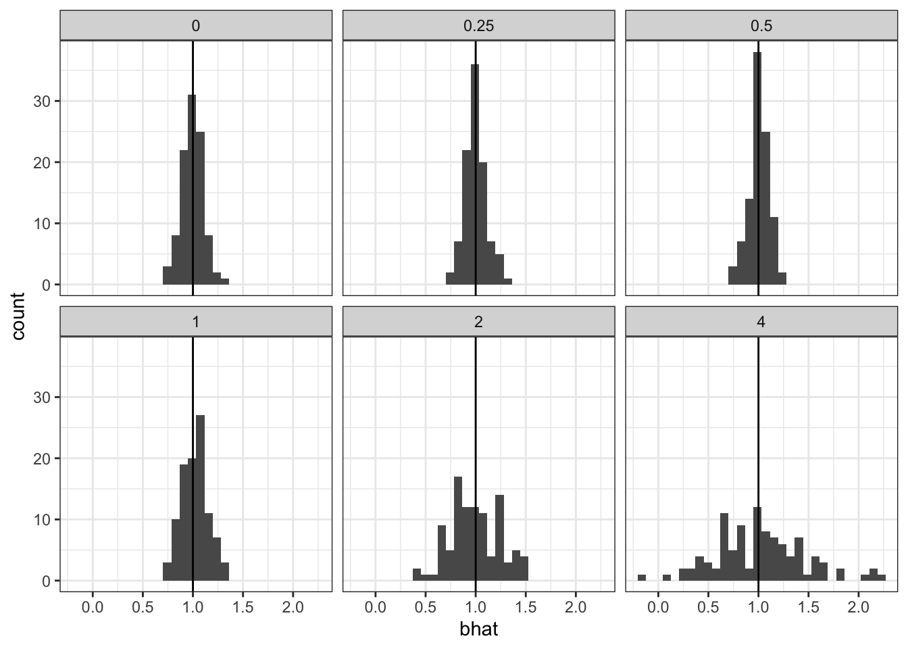
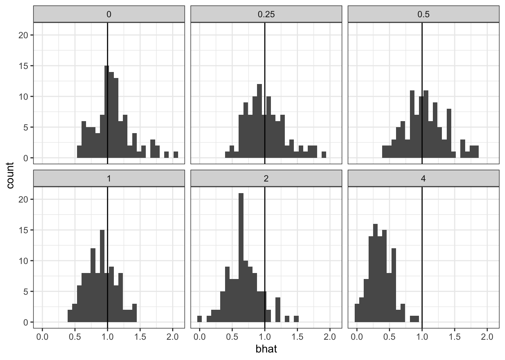
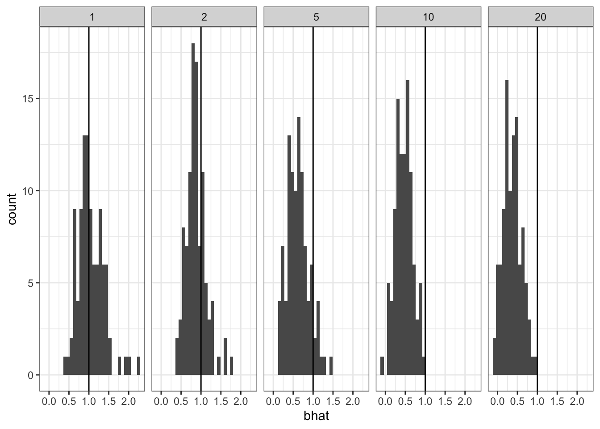
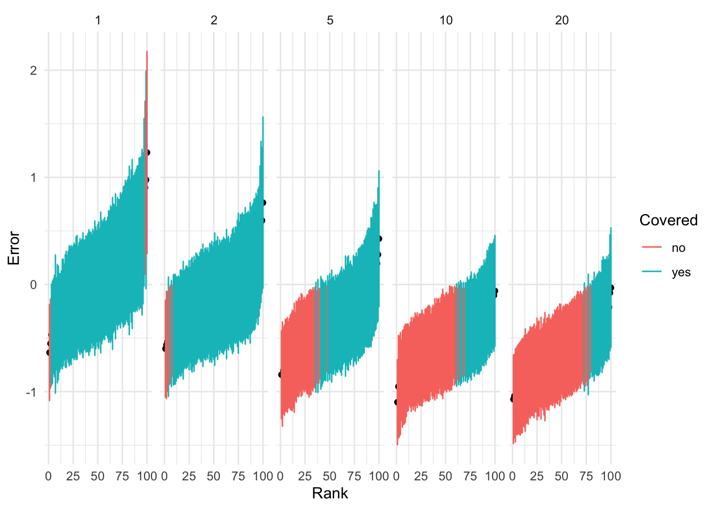
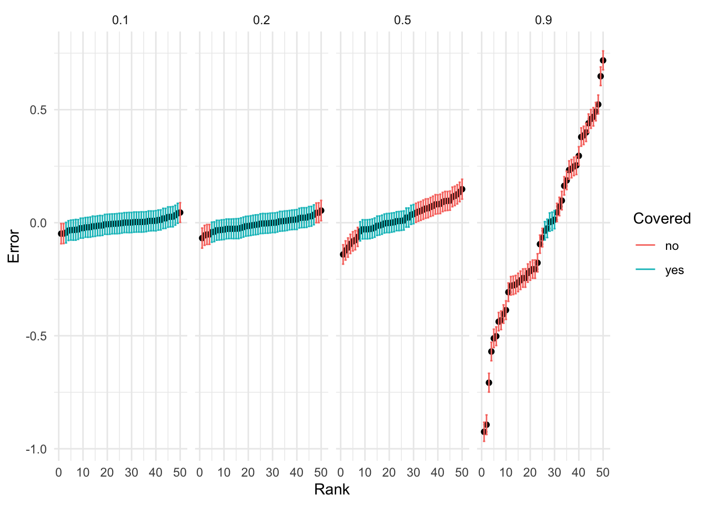
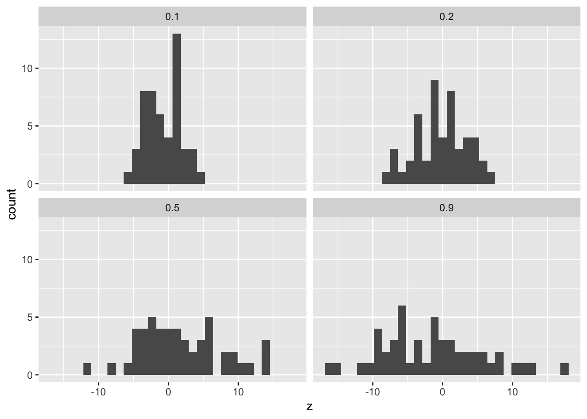

Code
library(dplyr)
library(tidyr)
library(kableExtra)
library(ggplot2)December 21, 2023
What happens when you ignore the randomness in a random intercept model? Here is a quick demonstration to show that the behavior is very different for linear regression and logistic regression.
For linear models if the intercept \(b_0 \sim N(\mu_0, \sigma^2_0)\) then fitting the linear regression will just have the effect of having a larger residual variance. Standard statistical software estimates the residual variance, and for modest sample size compared to the number of features this can be done quite well.
\[ y = b_0 + b x + \epsilon;\; \epsilon \sim N(0, \sigma^2) \]
\[ y = \mu_0 + b x + \tilde\epsilon;\; \tilde\epsilon \sim N(0, \sigma^2_0 + \sigma^2) \]
So we should expect OLS to give us unbiased estimate of the intercept and effect. That is what we see. Here we simulate 100 replicates of a simulation with \(n = 100\), \(\mu_0 = -1\) and \(b=1\). We vary \(\sigma_0\). Here we show the coverage of the 95% confidence intervals across 100 simulations. As expected, we achieve coverage for all settings of \(\sigma_0\) in the Gaussian linear model.
list2tibble <- function(l){
dplyr::tibble(!!!l)
}
simulation_linear <- function(n, b0, b, std0, std){
std <- sqrt(std0^2 + std^2)
x <- rnorm(n)
y <- b0 + x * b + rnorm(n) * std
fit <- lm(y ~ x)
coef <- summary(fit)$coef
res <-list(n=n, b0 = b0, b=b, std0 = std0, b0hat = coef[1, 1], b0_shat=coef[1, 2], bhat = coef[2,1], shat = coef[2, 2]) |> list2tibble()
return(res)
}
simrep_linear <- function(k, std0){
purrr::map_dfr(1:k, ~simulation_linear(100, -1, 1, std0, 1))
}
make_forrest <- function(res, column_name='std0'){
df <- res %>%
mutate(
Error = bhat -b,
Lower = Error - 2 * shat,
Upper = Error + 2 * shat,
Covered = ifelse(Lower < 0 & Upper > 0, "yes", "no")) %>%
arrange(Error) %>%
group_by(.data[[column_name]]) %>%
mutate(Rank = 1:n()) %>%
ungroup()
# Create the forest plot
ggplot(df, aes(x = Rank, y = Error)) +
# geom_hline(yintercept = 0, linetype = "dashed") +
geom_point(position = position_dodge(width = 0.5)) +
geom_errorbar(aes(ymin = Lower, ymax = Upper, color=Covered)) +
theme_minimal() + facet_wrap(vars(.data[[column_name]]))
}
cap <- 'The random intercept is not a problem for linear regression, the effect estimates will remain unbiased'
std0 <- c(0, 0.25, 0.5, 1.0, 2.0, 4.0)
res <- purrr::map_dfr(std0, ~simrep_linear(100, .x))
res %>%
rowwise() %>%
mutate(covered = (b < bhat + 2*shat) & (b > bhat - 2*shat)) %>%
ungroup() %>%
group_by(std0) %>%
summarize(coverage=mean(covered)) %>%
kbl(caption=cap) %>%
kable_classic(full_width = T, html_font = "Cambria")| std0 | coverage |
|---|---|
| 0.00 | 0.93 |
| 0.25 | 0.94 |
| 0.50 | 0.95 |
| 1.00 | 0.98 |
| 2.00 | 0.91 |
| 4.00 | 0.94 |
`stat_bin()` using `bins = 30`. Pick better value with `binwidth`.
For logistic regression, and GLMs generally, it is a different story. As the variance of the random intercept grows, we see worse behavior of the effect estimates.
simulation_logistic <- function(n, b0, b, std0){
x <- rnorm(n)
logit <- b0 + x * b + rnorm(n) * std0
y <- rbinom(n, 1, 1 / (1 + exp(-logit)))
fit <- glm(y ~ x, family='binomial')
coef <- summary(fit)$coef
res <-list(n=n, b0 = b0, b=b, std0 = std0, b0hat = coef[1, 1], b0_shat=coef[1, 2], bhat = coef[2,1], shat = coef[2, 2]) |> list2tibble()
return(res)
}
simrep <- function(k, std0){
purrr::map_dfr(1:k, ~simulation_logistic(100, -1, 1, std0))
}
std0 <- c(0, 0.25, 0.5, 1.0, 2.0, 4.0)
res <- purrr::map_dfr(std0, ~simrep(100, .x))
cap <- 'As the variance of the random intercept increases, the coverage rate of the 95% C.I. decreases'
res %>%
rowwise() %>%
mutate(covered = (b < bhat + 2*shat) & (b > bhat - 2*shat)) %>%
ungroup() %>%
group_by(std0) %>%
summarize(coverage=mean(covered)) %>%
kbl(caption=cap) %>%
kable_classic(full_width = T, html_font = "Cambria")| std0 | coverage |
|---|---|
| 0.00 | 0.97 |
| 0.25 | 0.96 |
| 0.50 | 0.94 |
| 1.00 | 0.95 |
| 2.00 | 0.70 |
| 4.00 | 0.16 |
`stat_bin()` using `bins = 30`. Pick better value with `binwidth`.
Closely related, we simulate from a model with multiple unobserved covariates. We simulate \(p\) covariates $[{}_1, , \({\bf x}_p]\) but only regress onto the first covariate \({\bf x}_1\) To make things simple we simulate the entries of the \(n\times p\) design matrix \(X\) as i.i.d. \(N(0, 1)\). Then, the columns of \(X\) are independent.
This is really just the random intercept model with extra steps, but maybe showing this makes it explicit that we should be aware of this in e.g. GWAS.
simulation_logistic_multi <- function(n, p, b0, b){
X <- rnorm(n*p) |> matrix(nrow=n)
x <- X[, 1]
logit <- b0 + Matrix::rowSums(X) * b
y <- rbinom(n, 1, 1 / (1 + exp(-logit)))
fit <- glm(y ~ x, family='binomial')
coef <- summary(fit)$coef
res <-list(n=n, b0 = b0, b=b, p = p, b0hat = coef[1, 1], b0_shat=coef[1, 2], bhat = coef[2,1], shat = coef[2, 2]) |> list2tibble()
return(res)
}
simrep <- function(k, p){
purrr::map_dfr(1:k, ~simulation_logistic_multi(100, p, -1, 1))
}
p <- c(1, 2, 5, 10, 20)
res <- purrr::map_dfr(p, ~simrep(100, .x))cap <- 'As the number of unobserved variables increases, the coverage drops off.'
res %>%
rowwise() %>%
mutate(covered = (b < bhat + 2*shat) & (b > bhat - 2*shat)) %>%
ungroup() %>%
group_by(p) %>%
summarize(coverage=mean(covered)) %>%
kbl(caption=cap) %>%
kable_classic(full_width = T, html_font = "Cambria")| p | coverage |
|---|---|
| 1 | 0.96 |
| 2 | 0.94 |
| 5 | 0.61 |
| 10 | 0.36 |
| 20 | 0.23 |
`stat_bin()` using `bins = 30`. Pick better value with `binwidth`.

There are two key differences between the behavior of the logistic regression effect estimates and the linear regression effect estimates
While the linear regression effect estimates are unbiased, the logistic regression effect estimates are increasingly biased as the variance of the random intercept increases (or the number of unobserved variables increases in our simply polygenic simulation)
We see that the effect estimates across simulations flatten out but usual C.I. still have good coverage. This is because the standard errors increasing with \(\sigma^2_0\). In contrast, the effect estimates from logistic regression don’t seem to be flattened out. Probably, the likelihood surface should be less peaked than it is. The linear regression can accomplish this by increasing the estimated residual variance, the logisitic regression can’t do that.
We are observinAt the end of the day, the likelihood should be much flatter w.r.t. the parameter of interest to account for the fact that there is so much uncertainty in the background risk.
The linear model has a mechanism for flattening the likelihood– by increasing the residual variance. However in the case of logistic regression there is not such option.
We should be concerned that we are underestimating the standard errors. Here we compare the MLE under the standard logistic model and the random intercept model. We approximate the random intercept model by sampling the intercept \(m=100\) times for each obsevation, and weighting each observation in the new regression by \(w=0.01\).
Unsurprisingly, we see better behavior from the (approximate) random intercept model. Across several simulation scenarios I’ve checked, I see that the standard error is ~\(40\%\) larger compared to the fixed intercept GLM fit. That would have huge implications for the BFs we calculate.
set.seed(2)
n <- 1000
b0 <- -1
b <- 1
std0 <- 4
x <- rnorm(n)
logit <- b0 + x * b + rnorm(n) * std0
y <- rbinom(n, 1, 1 / (1 + exp(-logit)))
fit <- glm(y ~ x, family='binomial')
coef <- summary(fit)$coef
fit <- glm(y ~ x, family='binomial')
coef <- summary(fit)$coef
m <- 100
y2 <- rep(y, m)
x2 <- rep(x, m)
o <- rnorm(n*m) * std0
w <- rep(1/m, n*m)
fit2 <- glm(y2 ~ x2 + offset(o), weights = w, family='binomial')Warning in eval(family$initialize): non-integer #successes in a binomial glm!
Warning in eval(family$initialize): non-integer #successes in a binomial glm!| Estimate | Std. Error | z value | Pr(>|z|) | |
|---|---|---|---|---|
| (Intercept) | -0.3697446 | 0.0651748 | -5.673125 | 0e+00 |
| x | 0.3165497 | 0.0645630 | 4.902957 | 9e-07 |
| Estimate | Std. Error | z value | Pr(>|z|) | |
|---|---|---|---|---|
| (Intercept) | -1.006124 | 0.1071652 | -9.388533 | 0 |
| x2 | 0.853390 | 0.1061993 | 8.035738 | 0 |
Suppose we had a trait with a heritability of liability of \(0.2\). That is, the proportion of variance in liability explained by genotype is \(20\%\). Suppose that we are considering a locus with one causal variant that explains \(1\%\) of the heritable component of variation.
We can see that the total variance of the genetic component is \[ \nu = \frac{\pi^2}{3} \frac{h^2}{1 - h^2} \]
We will assume that our genotype is normalized, and that the normalized effect is \(b \sim N(0, \sigma^2)\) where \(\sigma^2 = 0.01 \times \nu\).
simulation_logistic_poly <- function(n, b0, h2, rho){
nu <- pi^2/3 * h2/(1-h2)
sigma2 <- 0.01 * nu
x <- rnorm(n)
b <- rnorm(1, sd= sqrt(sigma2))
eps <- rnorm(n, sd = sqrt(nu - sigma2))
logit <- b0 + x * b + eps
y <- rbinom(n, 1, 1 / (1 + exp(-logit)))
fit <- glm(y ~ x, family='binomial')
coef <- summary(fit)$coef
res <-list(n=n, h2=h2, rho=rho, b0 = b0, b=b, b0hat = coef[1, 1], b0_shat=coef[1, 2], bhat = coef[2,1], shat = coef[2, 2]) |> list2tibble() %>% mutate(z = bhat/shat)
return(res)
}
simrep <- function(k, h2){
purrr::map_dfr(1:k, ~simulation_logistic_poly(10000, -1, h2, 0.01))
}
h2 <- c(0.1, 0.2, 0.5, 0.9)
res <- purrr::map_dfr(h2, ~simrep(50, .x))cap <- 'As the number of unobserved variables increases, the coverage drops off.'
res %>%
rowwise() %>%
mutate(covered = (b < bhat + 2*shat) & (b > bhat - 2*shat)) %>%
ungroup() %>%
group_by(h2, rho) %>%
summarize(coverage=mean(covered)) %>%
kbl(caption=cap) %>%
kable_classic(full_width = T, html_font = "Cambria")`summarise()` has grouped output by 'h2'. You can override using the `.groups`
argument.| h2 | rho | coverage |
|---|---|---|
| 0.1 | 0.01 | 0.94 |
| 0.2 | 0.01 | 0.86 |
| 0.5 | 0.01 | 0.46 |
| 0.9 | 0.01 | 0.10 |

`stat_bin()` using `bins = 30`. Pick better value with `binwidth`.
The standard logistic distribution has a variance of \(\pi^2/3\)
cap <- 'As the number of unobserved variables increases, the coverage drops off.'
res %>%
rowwise() %>%
mutate(covered = (b < bhat + 2*shat) & (b > bhat - 2*shat)) %>%
ungroup() %>%
group_by(h2, rho) %>%
summarize(coverage=mean(covered)) %>%
kbl(caption=cap) %>%
kable_classic(full_width = T, html_font = "Cambria")`summarise()` has grouped output by 'h2'. You can override using the `.groups`
argument.| h2 | rho | coverage |
|---|---|---|
| 0.1 | 0.0273567 | 0.94 |
| 0.2 | 0.0121585 | 0.98 |
| 0.5 | 0.0030396 | 0.42 |
| 0.9 | 0.0003377 | 0.04 |